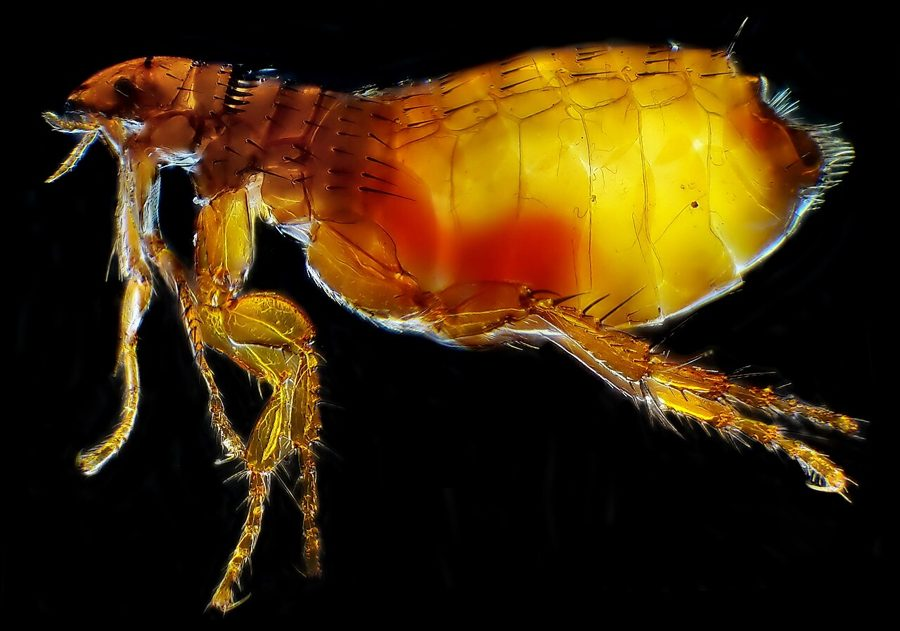

पिस्सूCat Flea
Ctenocephalides felis · Pulicidae · INS-0116

- Scientific nameवैज्ञानिक नाम
- Ctenocephalides felis (Bouché, 1835)
- Familyकुल
- Pulicidae
- Hindiहिंदी
- पिस्सू
- Local namesस्थानीय नाम
- pissu, pisu, flea, cat flea
- Status hereयहाँ की स्थिति
- native
- Movementआवागमन
- Resident, here all year
- IUCNIUCN
- not evaluated
- Reviewसमीक्षा
- audited and independently read
When to look कब देखें
Present all year.साल भर मौजूद।
Uses and possibilities उपयोग और संभावनाएँ
Drawn from the documented uses in the profile below, where each is labelled traditional, current or a research lead. All uses →
पिस्सू / Cat Flea
Ctenocephalides felis (Bouché, 1835) — Pulicidae
पिस्सू — घर की बिल्ली, कुत्ते या अन्य पालतू जानवरों की त्वचा पर सवार रहने वाली एक छोटी, भूरी, सपाट, तेज़ कूद सकने वाली बग। यह जानवर के खून को चूसती है। मादा सैकड़ों अंडे पालतू जानवर के बिस्तर, तकिए और घर की दरारों में देती है। अंडे 1-2 हफ़्ते में लार्वे बन जाते हैं, फिर कोकून में पप्पे में बदल जाते हैं। अगर घर में पिस्सू की संख्या बढ़ जाए तो मनुष्य को भी काटती है और तेज़ खुजली होती है। पिस्सू टेपवर्म भी ले जाते हैं।
Quick Identification त्वरित पहचान
| Feature | Description |
|---|---|
| Size | Small; body length 2–3 mm |
| Colour | Dark brown to black; shiny |
| Shape | Flattened laterally (side-to-side); elongate |
| Head | Small, with reduced eyes; mouthparts modified for piercing |
| Legs | Six, very long relative to body; powerful, adapted for jumping |
| Bristles | Comb-like rows of bristles (ctenidia) on the head and pronotum; diagnostic |
| Jumping | Can jump 30 cm vertically; highly mobile |
Field tip: On a cat or dog, a tiny dark insect moving rapidly through the fur, jumping when disturbed, leaving dark faecal specks ("flea dirt") on the skin. Flea dirt is often more visible than the flea itself. In the home, find the fleas in bedding and cracks; they become more visible if the animal is walked across a white cloth.
हिंदी — कैसे पहचानें: बिल्ली या कुत्ते के बालों में छोटा, काला कीड़ा; तेज़ कूद सकता है; पशु की त्वचा पर काले दाने दिख जाएँ (पिस्सू की गंदगी)।
Morphology आकारिकी
Biometrics:
| Measurement | Range |
|---|---|
| Body length | 2.0–3.0 mm |
| Body width | 0.5–0.8 mm |
| Hind leg length | 1.0–1.5 mm |
| Jumping height | up to 30 cm; horizontal distance up to 50 cm |
Structure: Body compressed laterally (flattened side-to-side), allowing easy movement through fur. Head small, with short antennae; eyes are small or absent; mouthparts are a stylet modified for piercing skin and drawing blood. The pronotum and head are edged with rows of stout bristles (ctenidia or combs), which are characteristic of the genus and are used for taxonomic identification. Thorax has three pairs of legs; the hind legs are greatly enlarged with heavy thigh muscles, accounting for the flea's remarkable jumping ability. Abdomen has 11 segments, each with spiracles for respiration. The skin is hard and glossy.
Life stages: Eggs are oval, cream-coloured, 0.5 mm; larvae are whitish, worm-like, 1–5 mm; pupae are dark, enclosed in a silken cocoon, 2–3 mm.
Behaviour & Ecology व्यवहार और पारिस्थितिकता
An obligate ectoparasite that spends its adult life on the fur of mammals, primarily domestic cats and dogs but also wild carnivores and occasionally humans. The flea feeds exclusively on blood, piercing the skin with its stylet and ingesting blood for 2–3 minutes per meal. A single female can lay 20–40 eggs per day for weeks. The eggs fall from the host into bedding, crevices, and floor dust. Larvae are free-living detritivores in the home environment, feeding on organic debris and flea faeces. Pupation occurs 7–14 days after the larval stages, and adults emerge 7–14 days later. The entire development from egg to adult takes 2–3 weeks in warm conditions, allowing 4–8 generations per year.
Adult fleas are highly mobile and can jump onto a new host from a distance of 30 cm. They remain on the host for life, grooming themselves to remain on the fur. A single infested animal can introduce fleas into a home, leading to rapid infestation of the premises.
हिंदी: बिल्ली पर ही जीवन भर रहता है। खून चूसता है। मादा हज़ारों अंडे दे सकती है। अंडे बिस्तर और दरार में गिरते हैं। दो हफ़्ते में नई पिस्सू बन जाती है। बहुत अधिक संख्या में हो जाएँ तो सारे घर में फ़ैल जाते हैं।
Life Cycle / Phenology जीवन चक्र
| Stage | Duration | Notes |
|---|---|---|
| Egg | 3–7 days | Laid by female on host; falls into bedding |
| Larva instar 1 | 2–3 days | Feeds on organic debris and flea faeces |
| Larva instar 2 | 2–3 days | Grows |
| Larva instar 3 | 3–5 days | Largest stage; spins cocoon |
| Pupa (in cocoon) | 7–14 days | Develops into adult; can remain dormant months |
| Adult | 30–60 days on host; up to 100 days total | Feeds, mates, and produces eggs |
| Egg to adult | 2–3 weeks in warm conditions | 4–8 generations per year |
Host Plants or Prey आहार
Primary hosts:
- Domestic cat (Felis catus)
- Domestic dog (Canis familiaris)
- Wild carnivores (less common)
Secondary hosts (occasional):
- Humans and other mammals (feeds but does not breed on them)
Feeding: Blood exclusively; adult fleas feed every 1–2 days.
Predators / Natural Enemies शत्रु
- In the home: parasitoid wasps (Nasonia sp.), parasitoid nematodes
- On the host: grooming by the host animal removes some fleas
- Predators: spiders, ants, and ground beetles may consume eggs and larvae in the environment
- Insecticides: many chemical and botanical products kill fleas (pyrethrin, imidacloprid, nitenpyram, spinosad)
Agricultural / Human Relevance कृषि प्रासंगिकता
What it does to people. The cat flea is a significant nuisance in homes with cats or dogs. The flea bites cause localized inflammation, redness, and intense itching. Scratching may lead to secondary bacterial infections. In heavily infested homes, flea bites can affect human comfort and sleep quality. Unlike human-specific fleas, cat fleas do not breed on humans, but they will feed on humans opportunistically, particularly if the primary host is unavailable.
Flea bites are characterized by small red papules (raised bumps) with a central puncture, usually on the legs and feet, arranged in a line where the flea has moved along the skin. The intense itching is due to an allergic reaction to flea saliva.
In homes with multiple pets or poor sanitation, cat fleas can reach very high densities, infesting bedding, furniture, and cracks in floors. The complete elimination of a flea infestation requires simultaneous treatment of all infested animals and the home environment.
Prevention and control: (1) regular use of flea prevention products on pets (topical or oral insecticides prescribed by a veterinarian); (2) regular vacuuming of bedding, furniture, and carpets to remove eggs and larvae; (3) washing of bedding in hot water; (4) treating the home with insecticides (pyrethrin sprays or diatomaceous earth) when infestation is severe; (5) keeping pets indoors to reduce exposure to wild animal sources; (6) prompt treatment of itching and prevention of secondary infection through scratching.
Not medical advice: This atlas does not provide medical treatment guidance. If flea bites are severe or become infected, consult a healthcare provider. Information here is for understanding the biology and prevention, not treatment.
Veterinary relevance: The cat flea is one of the most important parasites of companion animals. It is the primary vector of tapeworms (Dipylidium caninum) in cats and dogs; as the animal grooms itself after a flea bite, it may ingest the flea and become infected with the tapeworm.
Traditional and Ethnobotanical Use: various plant-based repellents (neem, lavender, eucalyptus) have been tried with limited scientific validation.
Today. Still the most common ectoparasite of pet cats and dogs in India. Prevention through modern veterinary products is highly effective.
Research direction (a lead, not a result). The prevalence of cat flea infestation in different regions of eastern UP and the factors contributing to infestation (e.g., pet ownership rates, awareness of control measures) have not been systematically documented.
हिंदी: बिल्ली में पिस्सू से कोई गंभीर बीमारी नहीं, पर खुजली हो जाती है। टेपवर्म ले सकते हैं। बिल्ली को नियमित कीटनाशक दवा लगवानी चाहिए (डॉक्टर से पूछें), बिस्तर धोना चाहिए, घर में झाड़ू लगानी चाहिए।
Expected Locally स्थानीय रूप से अपेक्षित
Not a field record. Written from published accounts for eastern Uttar Pradesh. No confirmed local sighting yet — if you have seen it, that is what the atlas needs.
अभी तक स्थानीय पुष्टि नहीं। यह विवरण प्रकाशित स्रोतों से है, किसी अवलोकन से नहीं।
Expected wherever domestic cats or dogs are kept in the district. The infestation prevalence depends on the use of flea-prevention products and is higher in animals without regular treatment. A specimen of a flea from a cat or dog, identified by its flattened shape and ctenidia, is a confirmed record.
Distribution वितरण
Global range: Worldwide; found wherever domestic cats and dogs are present.
In India: Universal in homes with pets; also in stray cat and dog populations.
In Uttar Pradesh: Widespread in both urban and rural areas.
In Basti district / eastern UP: Expected in all homes with pet cats or dogs.
Research Questions शोध प्रश्न
- What is the prevalence of flea infestation in pet cats and dogs in the district, and does it vary by season? / ज़िले में कितनी बिल्लियों को पिस्सू है? — Survey pet owners.
- How effective are different flea-prevention products available locally? — Comparative trial.
- Does flea infestation correlate with the presence of tapeworms in pets? — Cross-sectional survey.
- How long can fleas survive in bedding and carpets without a host? — Laboratory study.
- What is the awareness of flea control measures among rural pet owners? — Qualitative interview study.
Similar Species मिलती-जुलती प्रजातियाँ
| Species | How to tell apart | हिंदी |
|---|---|---|
| Dog flea (Ctenocephalides canis) | Nearly identical; requires expert examination of ctenidia and head shape; dog flea prefers dogs but also parasitizes cats | बिल्कुल समान; कुत्ते पर ज़्यादा |
| Human flea (Pulex irritans) | Slightly larger (2.5–4 mm); no ctenidia on head; breeds on humans and pigs | बिना दाँत, थोड़ा बड़ा |
| Lice (Pediculus) | Larger, flattened dorsoventrally (back-to-belly), wingless; move slowly | ज़्यादा सपाट, धीमे, कूद नहीं सकते |
Field rule: A tiny dark, flattened (side-to-side) insect that jumps, found on a cat or dog, with comb-like bristles on the head, is a cat flea.
Taxonomy & Classification वर्गीकरण
Original description. Bouché described the flea in 1835; it was later formally named Ctenocephalides felis. The genus name is from Greek meaning "comb-headed," referring to the ctenidia.
Subspecies. Monotypic — no subspecies are currently recognised.
Family and order placement. Pulicidae (common fleas), order Siphonaptera. Siphonaptera is an order entirely composed of bloodsucking ectoparasites of birds and mammals, with approximately 2,500 species. The order is thought to be related to the Mecoptera (scorpionflies).
Phylogenetic notes. Fleas are highly derived insects with extreme specialization for parasitic life: loss of wings, loss of compound eyes in most species, and modification of mouthparts for bloodfeeding. The ctenidia are a synapomorphy of the genus Ctenocephalides.
IUCN status rationale. Not evaluated. Abundant wherever domesticated cats and dogs are present.
Photo Gallery फोटो गैलरी
Photos needed आवश्यक फोटो
- [ ] Flea on a cat's fur or on a white cloth (बिल्ली पर)
- [ ] Close-up showing the comb-like bristles (करीब से)
- [ ] Flea dirt (dark specks) on the host skin (गंदगी)
No photos yet — add field photos to media/species/cat_flea/ and run node scripts/sync_photos.js.
References संदर्भ
- Bouché, P.F. (1835). Description des Siphonaptères. In Histoire naturelle des Insectes, vol. 2. Conservatoire du Musée d'Histoire Naturelle, Paris.
- Lewish, R.E. (1972–1998). Fleas of the world. Myodopsyllidae to Malacopsyllidae (Siphonaptera). Fauna of India and adjacent countries. Indira Publishing House, Dehradun.
- Durden, L.A. & Musser, G.G. (1994). The mammalian hosts of the world's fleas (Siphonaptera): ectoparasite-host associations. Proceedings of the Entomological Society of Washington 96(4): 694–740.
- Beaucournu, J.C. & Fontenille, D. (1997). Ectoparasites: Fleas, lice, mites and ticks of domestic animals and man. Diagnostic Manual. Éditions Mérieux.
- Rust, M.K. & Dryden, M.W. (1997). The biology, ecology, and management of the cat flea, Ctenocephalides felis felis. Journal of Medical Entomology 34(3): 345–355.
- GBIF Occurrence Data — Ctenocephalides felis, India (2026).
Source file: species/fauna/insects/cat_flea.md